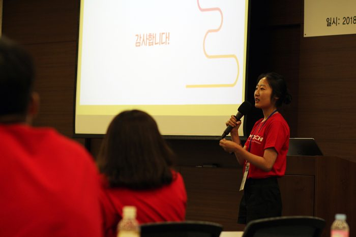
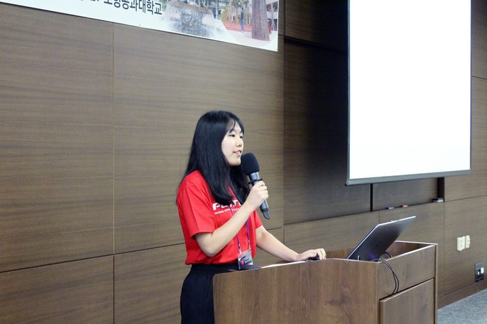
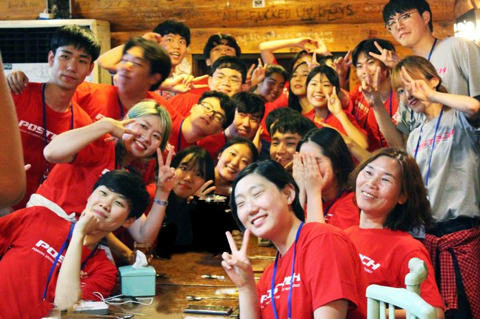
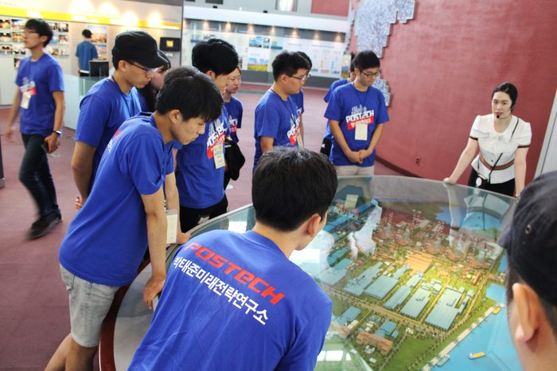

전체 7건

자연이 어우러진 아름다운 캠퍼스를 걸으며 이 시간이 계속되었으면 좋겠다고 몇 번이고 생각하였다.
- 2018 포스텍 청년비전캠프 서울대학교 아시아언어문명학부 이은수 후기

2018 에세이 공모전 및 청년 비전 캠프를 통해 미래를 생각하고 미래를 꿈꾸다.
- 2018 포스텍 청년비전캠프 단국대학교 국제경영학과 이종민 후기

너와 내가 연결고리를 만드는 데 걸린 시간 - 참가자들로 하여금 서로를 경쟁자가 아닌 ‘미래의 동료’로 여길 수 있도록 해 준 소통의 경험이었습니다.
- 2018 포스텍 청년비전캠프 서울여자대학교 저널리즘전공 이수현 후기

우리는 방 하나에 옹기종기 모여 한국 사회에 대해 토론을 하다가, 웃다가, 다시 의견을 나누며 하루밤을 꼬박 지새웠다.
- 2018 포스텍 청년비전캠프 서울대학교 박병후 후기

그들의 가치관과 나의 글을 빗대어 비교하면서, 제 시야를 넓일 수 있는 좋은 기회였습니다.
- 2018 포스텍 청년비전캠프 경희대학교 박준수 후기

정성껏 준비하신 일정 정말 재미있었어요.
"예쁜 캠퍼스 전경도 보고 맑은 새벽공기도 마시고 돌이켜보니 참 좋았어요 ." - 2016 포스텍 청년비전캠프 건국대 박재우 후기메일

연구소 분들께서 많이 애쓰고 공들인 캠프라는 느낌...
"연구소 분들께서 많이 애쓰고 공들인 캠프라는 느낌을 많이 받았어요. 캠프에 대한 애착, 그것이 있기까지 가지셨던 기대와 같은 것들이 캠프 동안 느껴졌던 것 같습니다." - 2016 포스텍 청년비전캠프 전북대 한결 후기메일
※ The publications and records listed here are in Korean. Titles are shown as published.